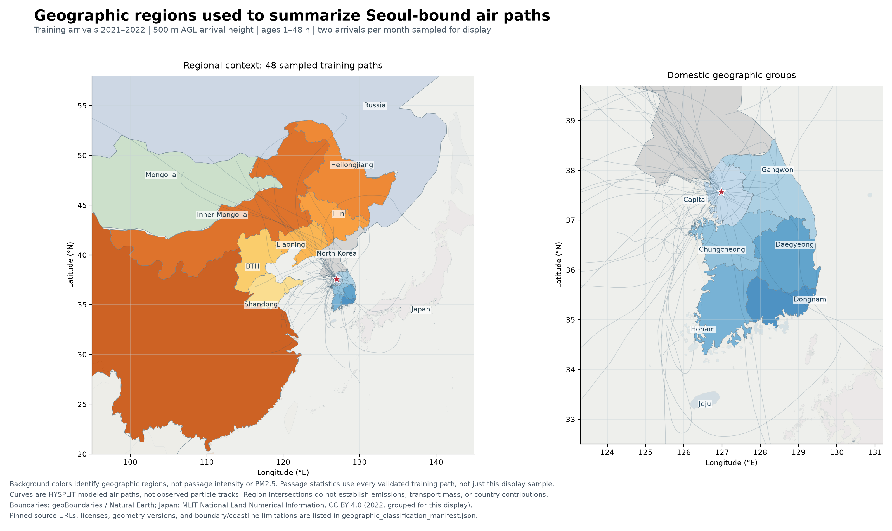
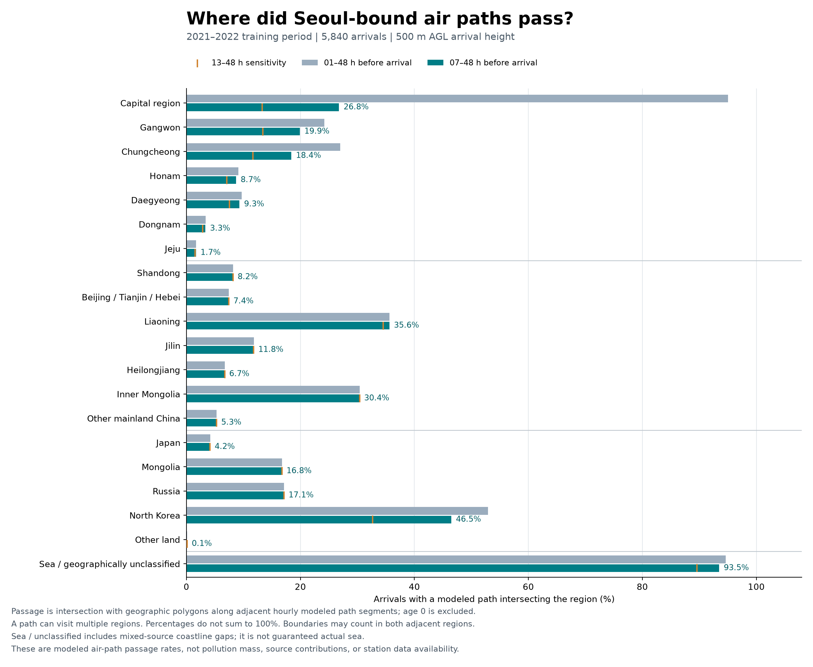
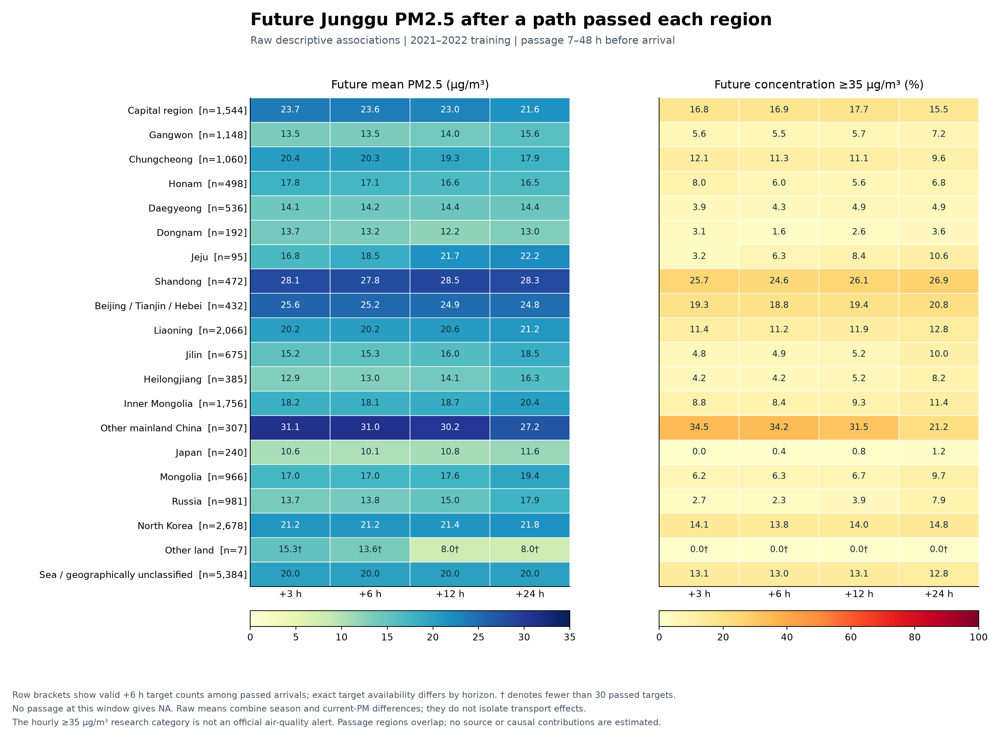
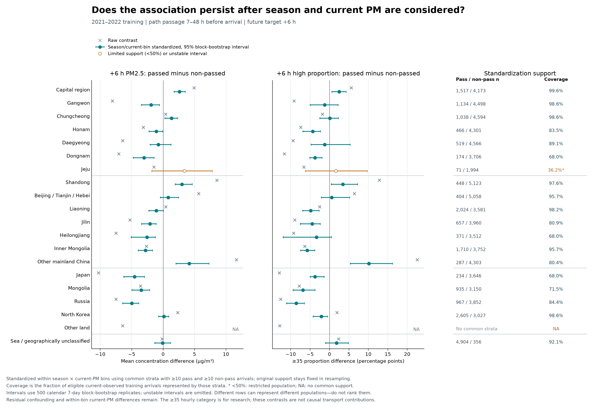
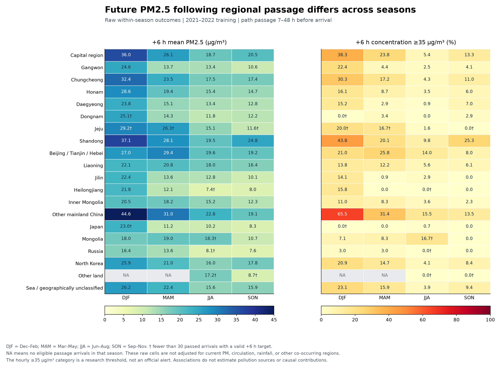

2021–2022년 학습구간 · 5,840개 도착 · 주 관계 분석 7–48시간 전 경로 · 500m AGL
아래 수치는 경로와 농도의 관계이며, 지역별 오염 기여율이나 모델 예측 개선률이 아닙니다.
통과율 분모는 전체 도착, 농도·고농도 비율 분모는 유효 정답입니다. 층화 결과의 공통 모집단은 권역마다 다르므로 조정 차이로 지역 간 순위를 매기지 마세요.
| 권역 | 통과율_pct | 통과_유효정답수 | 통과_6시간후평균_ugm3 | 통과_6시간후35이상_pct | 미통과_6시간후평균_ugm3 | 미통과_6시간후35이상_pct | 단순_평균차_ugm3 | 계절현재농도층화_평균차_ugm3 | 계절현재농도층화_고농도차_pp | 층화평균차_CI95하한 | 층화평균차_CI95상한 | 공통층_모집단포괄률_pct | 공통층수 |
|---|---|---|---|---|---|---|---|---|---|---|---|---|---|
| 수도권 | 26.78 | 1544 | 23.59 | 16.90 | 18.67 | 11.31 | 4.93 | 2.62 | 2.49 | 1.74 | 3.52 | 99.65 | 14 |
| 강원권 | 19.90 | 1148 | 13.52 | 5.49 | 21.59 | 14.63 | -8.07 | -1.92 | -1.26 | -3.44 | -0.59 | 98.63 | 12 |
| 충청권 | 18.42 | 1060 | 20.30 | 11.32 | 19.92 | 13.15 | 0.38 | 1.34 | 0.06 | 0.27 | 2.31 | 98.63 | 12 |
| 호남권 | 8.72 | 498 | 17.12 | 6.02 | 20.26 | 13.45 | -3.14 | -1.07 | -4.32 | -2.22 | -0.08 | 83.49 | 8 |
| 대경권 | 9.32 | 536 | 14.16 | 4.29 | 20.58 | 13.68 | -6.42 | -0.77 | -1.28 | -2.06 | 1.26 | 89.05 | 9 |
| 동남권 | 3.34 | 192 | 13.17 | 1.56 | 20.22 | 13.20 | -7.05 | -3.04 | -3.75 | -4.75 | -1.43 | 67.95 | 6 |
| 제주권 | 1.68 | 95 | 18.55 | 6.32 | 20.01 | 12.92 | -1.46 | 3.40 | 1.60 | -1.79 | 7.82 | 36.16 | 3 |
| 산둥 | 8.18 | 472 | 27.84 | 24.58 | 19.28 | 11.76 | 8.56 | 2.98 | 3.43 | 1.94 | 4.61 | 97.57 | 11 |
| 베이징·톈진·허베이 | 7.45 | 432 | 25.21 | 18.75 | 19.56 | 12.33 | 5.65 | 0.81 | 0.54 | -0.42 | 2.43 | 95.66 | 10 |
| 랴오닝 | 35.62 | 2066 | 20.25 | 11.18 | 19.84 | 13.72 | 0.41 | -1.08 | -4.84 | -2.27 | 0.02 | 98.16 | 12 |
| 지린 | 11.82 | 675 | 15.33 | 4.89 | 20.60 | 13.86 | -5.27 | -2.09 | -4.44 | -3.42 | -1.12 | 80.86 | 8 |
| 헤이룽장 | 6.71 | 385 | 12.98 | 4.16 | 20.49 | 13.43 | -7.51 | -2.58 | -3.39 | -5.07 | -1.22 | 68.00 | 7 |
| 내몽골 | 30.39 | 1756 | 18.14 | 8.37 | 20.80 | 14.76 | -2.66 | -2.80 | -5.74 | -3.95 | -1.70 | 95.66 | 10 |
| 기타 중국 | 5.31 | 307 | 31.03 | 34.20 | 19.36 | 11.61 | 11.66 | 4.16 | 10.14 | 2.05 | 7.28 | 80.39 | 9 |
| 일본 | 4.16 | 240 | 10.13 | 0.42 | 20.41 | 13.35 | -10.28 | -4.56 | -3.76 | -6.26 | -2.99 | 67.95 | 6 |
| 몽골 | 16.76 | 966 | 16.99 | 6.31 | 20.59 | 14.12 | -3.60 | -3.49 | -6.87 | -4.95 | -2.15 | 71.54 | 8 |
| 러시아 | 17.12 | 981 | 13.77 | 2.34 | 21.26 | 14.96 | -7.49 | -4.99 | -8.58 | -6.44 | -3.89 | 84.40 | 9 |
| 북한 | 46.49 | 2678 | 21.22 | 13.82 | 18.91 | 11.94 | 2.31 | 0.13 | -2.13 | -0.73 | 0.90 | 98.63 | 12 |
| 기타 육지 | 0.14 | 7 | 13.57 | 0.00 | 19.99 | 12.83 | -6.42 | NA | NA | NA | NA | 0.00 | 0 |
| 해상·지리적 미분류 | 93.49 | 5384 | 19.98 | 12.96 | 20.14 | 10.61 | -0.17 | -0.07 | 1.83 | -1.32 | 1.16 | 92.12 | 9 |





권역 통과와 이후 서울 중구 PM2.5: 2021–2022년 학습구간 EDA 1. 왜 학습구간을 중심으로 했는가 이번 결과를 관측 권역 선택·가설·모델 입력 설계에 활용할 예정이므로 2021–2022년에 한정했다. 2021–2024 전체의 분포를 사후 기술하는 것은 가능하지만, 2024년 정답과의 관계를 본 뒤 설계를 고르면 시험자료가 독립적인 최종 검증 역할을 하기 어렵다. 이 작업은 2023·2024의 정답 관계를 계산하지 않았으며, 기존 전체 기간 지도와 데이터는 수정하지 않았다. 2. 어떤 자료를 어떻게 비교했는가 - 3시간 간격 서울 도착 5,840시점, 도착고도 500 m AGL, 과거 48시간 경로. - 국내 7권역, 중국 6개 명시 권역과 기타 중국, 일본·몽골·러시아·북한, 기타 육지, 해상·지리적 미분류를 합한 20개 범주. region_definitions.csv에 실제 구성원 기록. - 전국 확장 PM2.5 자료에서 중구(111121)의 정확한 현재 농도를 가져왔다. 정답은 기존 고정 평가 격자의 eligible 규칙을 사용했다. 관측소 원주 50/75/100 km와 무관하게 실제 행정경계와 시간별 궤적 위치를 연결한 선분의 교차로 통과를 판단했다. 관측소를 늘려도 공기 경로나 지리적 통과율 자체가 바뀌지는 않는다. 이번 통계는 해당 권역의 관측 농도나 관측소 수를 가중한 값이 아니라, 그 권역을 지난 경로와 중구의 관계다. - 01–48시간은 전체 과거 구간, 07–48시간은 도착 직전 6시간을 제외한 주 관계 분석, 13–48시간은 도착지 효과에 대한 추가 비교다. 나이 0 도착점과 0–1시간 선분은 제외했다. - 선분은 모형의 시간별 위치를 위경도 좌표에서 직선으로 잇는 근사다. 실제 시시각각의 공기 움직임을 관측한 것이 아니다. 시간별 위치점 안쪽 여부도 별도 민감도로 보존했다. - 통과율 분모는 5,840개 전체 도착이다. 한 궤적은 여러 권역을 통과하므로 합계가 100%가 되지 않는다. 미래 농도와 고농도 비율의 분모는 각 지평의 유효 실측 정답 수다. - '고농도'는 시간값 PM2.5 ≥35 µg/m³라는 연구용 구분이다. 공식 일평균 등급이나 주의보·경보 발령 기준을 재현한 것이 아니다. 이번에는 경보 서비스 평가를 하지 않았다. - 정답은 채우지 않았다. 3/6/12/24시간 유효 정답은 각각 5,762/5,761/5,759/5,755개다. 현재 중구 농도 결측은 전체 도착 중 77개이고, 6시간 유효 정답 중 현재 결측인 43개는 현재 농도를 고려하는 표준화에서 제외했다. 기준선의 대체값을 현재 실측으로 쓰지 않았다. 3. 계절과 현재 농도를 어떻게 고려했는가 계절 DJF/MAM/JJA/SON × 현재 농도 [0,15), [15,35), [35,75), [75,∞)로 16개 층을 만들었다. 각 권역에서 통과·미통과가 모두 10개 이상인 층만 비교하고, 전체 유효·현재관측 학습표본의 층 비중을 그 공통층에 제한하여 다시 합이 1이 되도록 표준화했다. 해당 층들의 모집단 포괄률도 보고한다. 비교 가능한 층이 없으면 NA로 두며 0 효과로 처리하지 않는다. 서로 다른 권역은 공통층이 다르므로 조정 평균차를 그대로 지역 간 순위로 해석하면 안 된다. 모든 육지 권역에 공통인 층은 없었다. 넓은 농도 구간 안에도 현재 농도 차이가 남을 수 있어 층별 현재 농도 평균도 함께 저장했다. 이 표준화는 인과효과 추정이나 완전한 교란 제거가 아니다. 95% 구간은 결측 행을 제거하기 전 3시간 달력에서 7일 블록을 뽑는 500회 재표집 결과다. 필요한 층에 통과·미통과가 모두 존재하는 재표집만 사용했고, 유효 반복이 80% 미만이면 구간을 제시하지 않는다. 다중비교로 확정한 유의성이나 독립 오염사건 수를 뜻하지 않는다. 4. 주요 결과: 기본은 07–48시간 경로와 6시간 후 농도 (a) 도착지 효과가 매우 크다. 수도권 통과율은 01–48시간 95.03%에서 07–48시간 26.78%, 13–48시간 13.27%로 낮아진다. 서울에 도착하는 경로라는 조건 자체를 고려하지 않으면 수도권이 압도적으로 중요하다고 오해하기 쉽다. 강원 19.90%, 충청 18.42%, 호남 8.72%, 대경 9.32%, 동남 3.34%, 제주 1.68% 등 국내 다른 권역도 실제 경로에 연결된다. 서쪽 관측만으로 전체 흐름을 대표한다고 할 수 없다. (b) 자주 지나오는 곳과 높은 농도가 연결되는 곳은 다르다. 랴오닝 35.62%, 내몽골 30.39%, 러시아 17.12%, 몽골 16.76%, 산둥 8.18%, 베이징·톈진·허베이 7.45%, 일본 4.16%의 경로 통과율이 나왔다. 랴오닝을 지난 6시간 유효 정답 2,066개의 평균은 20.25 µg/m³로 전체 평균 19.99와 가깝다. 반면 산둥을 지난 472개는 평균 27.84 µg/m³, 35 이상 비율 24.58%였다. 전체 6시간 유효 정답의 35 이상 비율은 12.81%였다. 빈도만으로 고농도 연결성을 정할 수 없다. (c) 현재 농도와 계절을 함께 보면 단순 차이가 크게 축소된다. 산둥 통과·미통과의 단순 미래 평균차는 +8.56 µg/m³지만 층화 비교에서는 +2.98였다 (탐색적 95% 구간 +1.94~+4.61; 공통층 포괄률 97.57%). 고농도 비율 차이는 +12.82%p에서 +3.43%p로 줄었다. 이미 현재 중구 농도가 높은 경우가 많이 포함되어 있었다는 뜻이다. 징진지의 평균차도 +5.65에서 +0.81로 줄었고 구간은 -0.42~+2.43이었다. 강원은 -8.07에서 -1.92로 줄었다. 경로가 다른 계절과 현재 상태를 대리할 수 있음을 보여준다. 이 차이는 해당 지역의 배출 기여량도, 그 관측소를 추가했을 때의 예측 개선량도 아니다. (d) 계절별 비교는 필수다. 랴오닝 통과율은 겨울 71.04%, 여름 8.49%였고, 일본은 겨울 0.14%, 여름 9.71%였다. 일본 통과 6시간 표본은 겨울 2개·여름 142개여서 겨울 일본 결과는 해석할 표본이 부족하다. 산둥 통과 6시간 후 평균은 겨울 37.12, 여름 19.50 µg/m³였다. 경로별 연평균만 비교하면 계절 농도 차이를 지역 효과로 오해할 수 있다. 표와 그림에 유효 표본 수를 함께 적었다. (e) 일본·몽골·러시아 경로는 '기여가 없다'는 뜻이 아니다. 일본 통과 표본은 비교적 청정한 상태와 연결됐지만 이것만으로 일본 관측이 예측에 무용하거나 음성 대조라고 결론낼 수 없다. 청정 공기·농도 하강을 알리는 정보도 예측에 유용할 수 있다. 몽골 경로가 존재한다는 사실과 울란바토르 한 측정소가 그 경로를 대표하는가는 별개다. 러시아 경로와 중국 국경 도시평균 13곳도 동일하지 않다. 이 13곳은 중국 내 관측 대리자료이지 러시아 측정소나 러시아 배출 기여 자료가 아니다. 북한은 경로 범주만 있고 관측 확보와 별개다. (f) 3/6/12/24시간에서 관계가 달라지지만, 원격 관측 이득의 증가를 증명하지는 않는다. 산둥 통과 후 평균은 28.14/27.84/28.47/28.27, 러시아는 13.66/13.77/14.97/17.87이었다. 이는 현재 도착 경로 유형에 따른 이후 농도 변화다. t+24에 도착할 공기의 실제 역궤적을 사용하지 않았고, 미래 경로를 예측한 것도 아니다. 원격 정보의 추가 예측 가치는 동일 국내 기준선에 권역 정보를 더하거나 뺀 후 2023에서 설계하고 2024에서 고정 평가해야 확인된다. 5. 후속 실험에 반영할 점 - 산둥·징진지·랴오닝·북방 권역을 하나의 '중국' 변수로만 묶지 말고 분리 비교할 근거가 있다. 다만 EDA 평균이 높거나 자주 지나왔다는 이유로 관측소를 최종 확정하지 않는다. - 강원·남부권·일본 연결은 서쪽 경로만으로 설명되지 않는 대조 상황을 제공한다. - 주 비교는 강화된 전국 국내 기준선에 권역별 정보를 각각 추가하는 실험이다. 모든 입력에서 권역을 빼고 재학습하는 비교로 중복성도 확인할 수 있다. 이 EDA는 모델·그래프를 바꾸지 않았다. - 조건별 농도 관계, 실제 관측 가용성, 입력 추가 예측 성능을 서로 구분한다. 통과율 합계나 상관·표준화 차이를 100%로 정규화한 '국가별 오염 기여율'은 제시하지 않는다. - 궤적은 GDAS/HYSPLIT으로 사후 재현된 모형 결과이고 실제 자료 제공 지연은 별도다. 이 결과만으로 실시간 운영 성능을 주장하지 않는다. 이번 500 m 분석은 다른 도착고도, 혼합고 아래/위 여부, 궤적 불확실성까지 일반화하지 않는다. 6. 결과 파일과 읽는 순서 report.html: 그림·요약표를 함께 볼 수 있는 공유용 보고서. primary_6h_summary_ko.csv: 주 시간창·6시간 결과의 한글 열 요약표. passage_rates.csv: 전체·계절별 통과율, 선분과 위치점 비교. raw_region_future_outcomes.csv: 3/6/12/24시간 통과·미통과 평균과 고농도 비율. seasonal_region_future_outcomes.csv: 계절별 원자료 관계와 표본 수. season_current_stratified_outcomes.csv: 계절×현재 농도 층별 결과와 현재 농도 잔여 불균형. adjusted_region_contrasts.csv: 공통층 표준화 차이, 포괄률, 탐색적 구간. origin_analysis_table.parquet: 시점당 한 행의 학습구간 EDA 전용 표. 모델 입력 허용 목록이 아니며 y_h*, eligible_h* 등 정답 관련 열을 포함하므로 모델에 통째로 넣으면 안 된다. origin_visits.parquet: 도착×권역×시간창 통과 여부. classified_trajectory_points_train.parquet: 시간별 위치와 지리적 범주. 나머지 JSON·CSV는 정의·출처·검증 기록이다. 7. 경계 출처 및 이용 조건 한국: Natural Earth via geoBoundaries, 2021, Public Domain. 중국: geoBoundaries/Wikimedia Commons, 2019, Public Domain. 일본: Ministry of Land, Infrastructure, Transport and Tourism (MLIT), National Land Numerical Information Download Site, via geoBoundaries, 2022, CC BY 4.0. 일본 경계는 유효성 보정·병합·중복영역 조정을 거쳤다. https://creativecommons.org/licenses/by/4.0/ 몽골·러시아·북한 등: 기존 Natural Earth 1:110m 국가경계, Public Domain. https://www.geoboundaries.org/api/current/gbOpen/KOR/ADM1/ https://www.geoboundaries.org/api/current/gbOpen/CHN/ADM1/ https://www.geoboundaries.org/api/current/gbOpen/JPN/ADM0/ 정확한 다운로드 URL·메타데이터·해시는 geographic_classification_manifest.json과 Codes/assets에 있다. 서로 다른 연도·축척의 고정 경계를 사용했으며 매년 행정경계를 재구성한 것은 아니다. 해안선 자료 차이나 해결되지 않은 지리는 '해상·지리적 미분류'에 남겨 두었다.